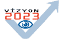

|

Vizyon 2023; Bilim ve Teknoloji Stratejileri Projesi:
Bilim
ve teknoloji uzun dönemli ekonomik ve toplumsal geliþmenin
en önemli unsurlarýndan birisi, bilim ve teknoloji politikalarý
ise bu geliþimin hýzýný ve yönünü etkilemenin bir aracýdýr.
Dünyada
ekonomik ve sosyal anlamda geliþmiþ ülkelerin tümü (ABD, Japonya,
AB üyesi birçok ülke) uzun dönemli toplumsal, ekonomik ve
siyasi hedefleri ile uyumlu bir bilim ve teknoloji vizyonu
geliþtirmiþlerdir ve bu vizyonu güncellerken teknoloji öngörüsü
çalýþmalarýný etkin bir araç olarak kullanmaktadýrlar.
Türkiye'de
1960'larda Planlý Dönem ile baþlayan B&T politikalarý
oluþturma çalýþmalarý özellikle 'Türk Bilim Politikasý 1983-2003'
ve 'Türk Bilim ve Teknoloji Politikasý 1993-2003' dokümanlarýyla
önemli bir boyut kazanmýþtýr.
Ancak,
bugüne kadar ortaya koyulan belgelerin, genel geçerliliði
tartýþmasýz unsurlar içermelerine ve önemli bazý kurumsal
ve yasal deðiþiklikler getirmelerine karþýn, hedefleri bakýmýndan
tam olarak uygulamaya konulduklarý söylenemez. Bunun nedenleri
olarak, bilim ve teknoloji alanýnda paylaþýlan bir ülke vizyonunun
ortaya konulamamýþ olmasý ve önerilen politikalarýn ilgili
bütün kesimler (siyasi erk, kamu, özel kesim ve üniversiteler)
tarafýndan ortaklaþa sahiplenmelerinin saðlanamamasý gösterilebilir.
Bu
saptamadan hareketle, refah toplumuna ulaþma sürecinde bilim
ve teknolojiden etkin bir araç olarak yararlanýlmasýný saðlamak
üzere, Bilim ve Teknoloji Yüksek Kurulu 13 Aralýk 2000 tarihli
toplantýsýnda 2003-2023 yýllarý için Türkiye'nin Bilim ve
Teknoloji Stratejileri Belgesi'nin hazýrlanmasý kararýný almýþtýr.
Yaklaþýk
bir yýl süren hazýrlýk çalýþmalarý ardýndan, 24 aralýk 2001
tarihli Yedinci Bilim ve Teknoloji Yüksek Kurulu toplantýsýnda,
Projenin adý "Vizyon 2023: Bilim ve Teknoloji Stratejileri"
olarak belirlenmiþ; projenin ana temasý, temel yaklaþýmý ve
bu kapsamda yürütülecek alt projelerin ayrýntýlý içeriði ile
yürütme planý ve yönetim þekli onaylanmýþtýr.
Projede
aþaðýdaki çalýþmalarýn kapsanmasý planlanmýþtýr:
- Türkiye'nin
bilim ve teknoloji alanýnda mevcut konumunun saptanmasý
- Dünyada
bilim ve teknoloji alanýndaki uzun dönemli geliþmelerin
saptanmasý
- Türkiye'nin
2023 hedefleri baðlamýnda, bilim ve teknoloji taleplerinin
belirlenmesi
- Bu
hedeflere ulaþýlabilmesi için gerekli stratejik teknolojilerinin
saptanmasý
- Bu
teknolojilerin geliþtirilmesi ve/veya edinilmesine yönelik
politikalarýn önerilmesi
Vizyon
2023 Projesi aþaðýdaki Alt Projelerden oluþmaktadýr:
Teknoloji
Öngörü Projesi:
TÜBÝTAK'ýn
koordinasyonunda, ilgili kamu ve özel kuruluþlar, üniversiteler
ve sivil toplum kuruluþlarýyla eþgüdüm içinde yürütülmesi
planlanan Vizyon 2023 Projesi'nin temel eksenini, ülkemizde
ilk kez gerçekleþtirilecek olan "Teknoloji Öngörü" alt projesi
oluþturacaktýr.
Teknoloji
Öngörü Projesi ile ilgili bütün kesimlerin geniþ katýlýmýyla
ve sistematik bir yöntemle, istenen bir geleceðe ulaþmak için
bilim ve teknoloji alanýnda neler yapýlmasý gerektiði konusunda
"görüþ toplanmasý ve bu görüþlerin derlenmesi" amaçlanmakta
ve bu yolla oluþturulacak bilim ve teknoloji politikalarýnýn,
toplumun ilgili bütün kesimlerince sahiplenilmesi sonucunda
daha fazla uygulama olanaðý bulmasý beklenmektedir.
Proje sonucunda elde edilmesi beklenen bulgular ve kazanýmlar
ise þunlardýr:
- Türkiye
için stratejik teknolojiler ile öncelikli Ar-Ge alanlarýnýn
belirlenmesi,
- B&T'nin
ülke gündemine girmesi, farkýndalýðýn arttýrýlmasý,
- Sürece
geniþ ve etkin katýlým.
Türkiye
için kurgulanan Teknoloji Öngörü Projesi'nde,
temel unsur paneller olmak üzere, iki yöntemin birlikte yer
almasýna karar verilmiþtir:
- Paneller
- Sosyo-Ekonomik
Paneller: Sosyo-ekonomik faaliyet alanlarýnda öngörü
çalýþmasý yürütecek paneller
- Tematik
Paneller: Tematik konularda ve teknoloji alanlarýnda
çalýþma yürütecek paneller
- Delfi
Sorgulamasý
- Öngörülen
teknolojik geliþmeler ve etkileri üzerine yapýlacak
uzman sorgulamasý
Çeþitli
sosyo-ekonomik faaliyet alanlarý ve tematik konularý kapsayan
paneller, kendi ilgi alanlarýnda teknoloji öngörüsü çalýþmasý
yürütecekler; panellerin ortaya koyduðu saptamalar, yaygýn
danýþma sürecinde, ilgili toplum kesimlerinde tartýþýlacak
ve Delfi Sorgulamasý ile de geniþ bir uzmanlar grubunun görüþlerine
baþvurulacaktýr.
Yaygýn
danýþma sürecinden elde edilen görüþlerin ýþýðýnda son þeklini
alan panel çalýþmalarýnýn sonuçlarý, daha sonra bir bütünlük
içinde ele alýnarak ve "stratejik teknoloji ölçütleri" kullanýlarak,
ülkenin bilim ve teknoloji vizyonu ve stratejik teknoloji
alanlarý belirlenecektir. Teknoloji Öngörü Projesi, bilim
ve teknoloji sisteminin mevcut kapasitesinin saptanmasýna
yönelik diðer üç alt proje (Ulusal Teknoloji Envanteri, Türk
Araþtýrýcýlar Envanteri, Ulusal Ar-Ge Altyapýsý) ile birlikte,
ülkenin 20 yýllýk bilim ve teknoloji stratejilerini þekillendirecektir.
Vizyon
2023 Projesi'nin üst düzey yetki ve onay mercii olan Yönlendirme
Kurulu, 13 Nisan 2002 tarihli ilk toplantýsýnda, proje kapsamýnda
oluþturulacak panelleri belirlemiþtir.
Sosyo-ekonomik
Panellerden, ilgili olduklarý faaliyet alanlarýnda;
-
VÝZYON (2023'de nasýl bir Türkiye?)
- SOSYO-EKONOMÝK
HEDEFLER (Hangi sosyo-ekonomik hedeflere ulaþýlýrsa kurgulanan
vizyon gerçekleþebilir?)
- TEKNOLOJÝK
FAALÝYET KONULARI (Hedeflere eriþebilmek için hangi teknolojik
faaliyetler gerekli?)
- TEKNOLOJÝ
ALANLARI (Bu faaliyet alanlarý için hangi teknoloji alanlarýnda
hangi yetenekler gerekli?)
- TÜRKÝYE'NÝN
KONUMU (Bu teknolojik yeteneklerde neredeyiz?)
- POLÝTÝKA
ÖNERÝLERÝ (Bu yeteneklere sahip olmak için neler yapmalýyýz?)
kapsamýnda
çalýþmalar ve raporlar beklenmektedir.
Proje
kapsamýnda oluþturulacak Tematik Panellerden;
- Sosyo-Ekonomik
Panellerin çalýþmasýnda;
- Öne
çýkan ortak sorunlar (örneðin Ar-Ge insan gücü veya
altyapýsý gibi)
- Öne
çýkan ortak veya ileride Türkiye için de giderek önem
kazanacaðý öngörülen yayýlgan teknoloji alanlarý (örneðin
biyoteknoloji, malzeme, biliþim gibi)
- Bütün
panel sonuçlarýnýn ortak deðerlendirmesi ve B&T alanýnda
ülke vizyonunun oluþturulmasý yönünde
çalýþmalar
ve raporlar beklenmektedir.
Delfi
sorgulamasýnda ise,
- Paneller
tarafýndan öngörülen teknolojik yeteneklerin dünyada ve
Türkiye'de gerçekleþmesi / edinilebilmesi;
- Bu
teknolojik geliþmelerin belirlenecek stratejik teknoloji
ölçütleri üzerinde etkileri
gibi
hususlarýn; ilgili konu uzmanlarýna yapýlacak iki aþamalý
bir anket ile sorgulanmasý gerçekleþtirilecektir.
Paneller
tarafýndan öngörülen ve Delfi sorgulamasý ile uzmanlarca deðerlendirilen
teknoloji alanlarý/teknolojiler arasýndan,
- Önem
Düzeyi
ve
- Yapýlabilirliði
yüksek
teknolojiler, ülkemiz için stratejik teknolojiler olarak
belirlenecektir. Bu amaçla; çeþitli teknolojik faaliyetlerin
önem düzeylerini belirlemek için Stratejik Teknoloji Ölçütleri,
yapýlabilirlik düzeylerini belirlemek için ise panel öngörüleri
ve Delfi sonuçlarý kullanýlacaktýr.
Stratejik
teknoloji ölçütleri, bir anlamda "Türkiye'nin 2023 hedefleri
baðlamýnda bilim ve teknolojiden öncelikli beklentileri nelerdir?"
sorusuna verilecek yanýtlardýr. Bir teknolojiyi diðerine göre
daha önemli (stratejik) kýlan, örneðin "rekabetçiliði artýrmasý"
veya "iþsizliði azaltmasý" veya "çevreye duyarlýðý" gibi farklý
özellikleri olabilir. Stratejik teknoloji ölçütleri, iþte
bu farklý özellikler arasýndan, panellerden alýnacak öneriler
deðerlendirilerek, Yönlendirme Kurulu tarafýndan yapýlacak
önceliklendirme ile belirlenecektir.
baþa
dön
Ulusal
Teknoloji Envanteri Projesi:
Bu
Proje ile Türkiye'de ilk kez uluslararasý normlarda kapsamlý
bir teknolojik yetenek düzeyi saptanmasý hedeflenmiþtir. Proje
sonucu ortaya konacak olan Türkiye'nin teknolojik yetenek
envanteri, hem "Teknoloji Öngörüsü Projesi"ne hem
de "2003-2023 Strateji Belgesi"nin hazýrlanmasýna
girdi oluþturacaktýr.
Makine parký, ülkemizde bugüne kadar teknolojik yeteneðin
tek göstergesi olarak kabul edilmiþtir. Oysa teknolojik yeteneðin,
makinelere sahip olmaktan yenilik yeteneðine uzanan çeþitli
düzeyleri bulunmaktadýr. Teknolojik yetenek, bir iþletmenin
stratejik rekabet avantajý yaratmak için gerekli teknolojileri
kullanma, seçme ve geliþtirme faaliyetlerinin bütününü ifade
eder:
- Teknoloji
kullanma (üretim yeteneði): Verili bir teknolojiyi etkin
kullanabilme yeteneði;
- Teknoloji
seçme (yatýrým yeteneði): Teknoloji seçenekleri arasýndan
mevcut koþullara en uygun olanýný seçebilme yeteneði;
- Teknoloji
geliþtirme (yenilik yeteneði): Yeni teknoloji seçenekleri
geliþtirme yeteneði.
Projenin
Amacý Teknolojik
Yetenek Projesi ile aþaðýda sýralanan göstergelerin, ekonomik,
yapýsal, politik (yenilik politikasý kapsamýnda), sektörel
vb. parametrelerle iliþkilerinin analiz edilmesi amaçlanmýþtýr:
- Ýmalat
sanayiinde ve yazýlým sektöründe (panel faaliyet konularý
ayrýmýnda) teknolojik yetenek düzeyinin ölçülmesi
- Teknoloji
ödemeler dengesinin hesaplanmasý
- Ýmalat
sanayiinde teknoloji stokunun saptanmasý
Projenin
Kapsamý
TÜBÝTAK,
Devlet Ýstatistik Enstitüsü (DÝE) ve Türkiye Teknoloji Geliþtirme
Vakfý (TTGV) tarafýndan yürütülen projede, Türkiye'nin teknolojik
yetenek düzeyinin saptanmasýna yönelik çalýþmanýn, aþaðýda
tanýmlanan kategorilerde yaklaþýk 2500 firmayý kapsamasýna
karar verilmiþtir:
1.
Ar-Ge yapan / TÝDEB veya TTGV'den Ar-Ge desteði almýþ olan
imalat sanayii iþyerleri [yaklaþýk 750 firma]
2. 100 ve daha fazla kiþi çalýþtýran imalat sanayii iþyerlerinden
çekilen örneklem [yaklaþýk 700 firma]
3. 10-99 kiþi çalýþtýran imalat sanayii iþyerlerinden çekilen
örneklem [yaklaþýk 1000 firma]
4. Yazýlým sektöründeki iþyerleri [yaklaþýk 250 firma]
Yöntem
Projede
"anket" yönteminin uygulanmasýna karar verilmiþtir.
Anket çalýþmasýnýn yukarýda sýralanan iþyeri gruplarýndan
ilkine yüzyüze görüþme yoluyla, ikinci ve üçüncü gruba posta
ile, dördüncü gruba da web ortamýnda yapýlmasý planlanmýþtýr.
Ýmalat
sanayii ve yazýlým firmalarý için iki ayrý anket formu tasarlanmýþtýr.
Hazýrlanan 12 sayfalýk Teknolojik Yetenek Anket Formu, aþaðýda
baþlýklarý verilen 8 bölümden oluþmaktadýr:
A)
Ýþyeri hakkýnda genel bilgiler
B) Teknoloji transferi giderleri
C) Teknoloji transferi gelirleri
D) Ýþgücü ve rekabet
E) Ürün bilgisi ve üretim
F) Ürünler ve prosesler
G) Teknolojiler
H) Öngörüler
Teknolojiler
bölümünde, son beþ yýl içinde,
- Ýþyeri
tarafýndan geliþtirilmiþ,
- Ýþyerine
rekabet gücü saðlayan veya gelecekte saðlayabilecek olan
ve
- Patenti
alýnmýþ veya patent alýnma potansiyeline sahip spesifik
teknolojilerin belirtilmesi istenmektedir.
...
baþa
dön
Türk
Araþtýrýcýlar Envanteri Projesi:
ARBÝS,
yurtiçi ve yurtdýþýndaki araþtýrýcýlarýn bilimsel faaliyet
alanlarý, yürüttükleri Ar-Ge çalýþmalarýnýn uygulanabileceði
endüstriyel iþ kollarý ve bu çalýþmalar sonucu geliþtirilen
ürün ve teknolojiler hakkýnda kodlanamýþ bilgileri derlemeyi
amaçlayan, TÜBÝTAK tarafýndan tasarlanmýþ ve geliþtirilmiþ
web tabanlý bir veritabaný uygulamasýdýr.
ARBÝS,
araþtýrýcý bilgilerinin toplanmasý, toplanan bilgilerin güncellenmesi
ve bu verilerin farklý kuruluþlarca farklý amaçlarla kullanýlmak
üzere deðerlendirilmesine olanak saðlayan dinamik bir sistemdir.
TÜBÝTAK
ARBÝS proje yöneticisi Doç. Dr. Serhat Çakýr, TurkCADCAM
grubu için þu görüþlerini iletmiþtir:
"ARBÝS projesi için içerik çalýþmasý, veritabaný kodlamasý
ve TÜBÝTAK Gebze yerleþkesinde testler yaklaþýk 1.5 sene önce
baþlamýþ ve 2003 yaz aylarýnda ise kullanýma açýlmýþtýr. ARBÝS
web sitesi ve ARBÝS'e yapýlan baþvurular hergün güncellenmektedir.
Ayrýca, kullanýcýlarýn kendi bilgilerini sýkça güncellemeleri
de gerçekten umut verici bir noktadadýr; Zira son bir hafta
içinde yaklaþýk 800 araþtýrýcý ARBÝS'e girerek bilgilerini
güncellemiþlerdir. Bu, yeni bir veri tabaný için umut vericidir.
Ayrýca AB 6. Çerçeve Programý (www.fp6.org.tr)
ile ilgili haberleri de yakýnda ARBÝS kullanýcýlarýna göndermeye
baþlayacaðýz..."
14-03-2004
itibarýyla ARBÝS kayýtlarý hakkýnda alýnan genel istatsitikler
aþaðýdaki tabloda verilmiþtir:
|
Araþtýrýcý
Sayýlarý
|
Ar-Ge
Kuruluþu Sayýlarý
|
Üniversite
: 1776
Kamu : 758
Sivil Toplum Kuruluþu : 11
Ticari (Özel) : 322
Ticari (KÝT) : 12 |
Üniversite
: 202
Kamu : 120
Sivil Toplum Kuruluþu : 8
Ticari (Özel) : 108
Ticari (KÝT) : 6 |
| TOPLAM
: 2879 |
TOPLAM
: 444
|
CAD/CAM
konusunda ise çoðu üniversite ve devlet Ar-Ge kuruluþlarýnda
çalýþan 14 kiþi ARBÝS'e kayýtlý bulunmaktadýr.
ARBÝS
veritabanýna özel sektörden düþük oranda katýlým olmasý Türkiye'de
üniversite-sanayi iþbirlðinin yeterli seviyeye çýkarýlabilmesi
için daha çok çalýþmalar yapýlmasýna ihtiyaç olduðunu göstermektedir.
TurkCADCAM.net portalýnda yapýlan bir ankette (Anket-03)
oy kullananlarýn sadece %1'lik bir kýsmýnýn Türkiye'de üniversite-sanayi
iþbirliðini yeterli seviyede görmesi de bu ihtiyacýn varlýðýný
desteklemektedir...
TurkCADCAM
e-posta grubu üyeleri ve portal ziyaretçilerine ARBÝS'in duyurulmasýyla,
Türkiye'de yeni ürün tasarým, geliþtirme, CAD/CAM/CAE ve imalat
teknolojileri üzerine çalýþan daha fazla kiþinin bu veritabanýna
kayýt yaptýrmasý beklenmektedir. Bu da üniversite-sanayi iþbirliði
konusunda Türkiye'nin daha hýzlý yol almasýna yardým edecektir...
Standart
kodlama sistemi
Þimdiye
kadar ARBÝS veritabanýnda þu üç kodlama sistemi kullanýlmýþtýr:
1) TUBÝTAK Bilim Teknoloji Kodlarý
2) ISIC (Uluslararasý Kuruluþ Ýktisadi Faaliyet Alanlarý)
3) IPC (Uluslararasý Patent Kodlarý)
Yakýnda
serbest anahtar kelimelerin (keywords) yanýnda, AB'nin kullandýðý
ve iþ ortaðý (partner) bulmada çok yararlý olacaðý düþünülen
CORDIS kontrollü anahtar kelimeleri de eklenecektir.
Ayrýca
giderek artan, ulusal/uluslararasý onaylanmýþ kurum, kuruluþ,
þehir, Ar-Ge birimi, bölüm, YÖK anabilim dalý listeleri, kullanýcýlar
için oldukça önemli bir kolaylýktýr. ARBÝS'e kaydýný yaptýran
bir kiþi kendi kurum, kuruluþ, þehir, Ar-Ge birimi, bölüm
ve YÖK anabilim dalýný hazýr bir listeden seçilebiliyor. Bu
altyapý kamu kuruluþlarý ve üniversiteler için büyük bir oranda
tamamlanmýþ durumdadýr.
baþa
dön
Ulusal
Ar-Ge Altyapýsý Projesi:
Amaç
- Türkiye'
deki araþtýrma kuruluþlarýnýn (kamu, özel, üniversite) envanterinin
çýkarýlmasý
- Bu
kuruluþlarýn araþtýrma faaliyetlerinin ve potansiyelinin
deðerlendirilmesi
- Türkiye'deki
Ulusal/Uluslararasý Proje stoðunun saptanmasý
Yöntem
- Mevcut
verilerin taranmasý, yüzyüze görüþme ve anket
Ulusal
Ar-Ge Altyapýsý Bilgi Sistemi (ARABÝS)
Yeni
hazýrlanan bu veritabanýnýn sadece Ar-Ge birim/bölüm baþkanlarý
tarafýndan doldurmasý bekleniyor. Bu çalýþmayla Türkiye'deki
Ar-Ge birimlerindeki makine/techizat/sistem/yazýlým (5.000
dolar üzeri) dýþýnda Türkiye'nin proje stokunun da belirlenmesi
amaçlanýyor. ARABÝS veritabanýnda da ARBÝS'de olduðu gibi
yine uluslararasý sýnýflandýrma kodlarý kullanýlmýþtýr (NSF,
ISIC, IPC).
Ýçerik
çalýþmalarý, kodlamasý ve testi tamamlanan ARABÝS, yakýnda
kullanýma açýlacaktýr...
baþa
dön
Daha fazla bilgi için:
TÜBÝTAK
Türkiye Bilimsel ve Teknik Araþtýrma Kurumu
Atatürk Bulvarý, No: 221 Kavaklýdere, 06100 Ankara
Tel: (312) 467 36 59
www.tubitak.gov.tr
|